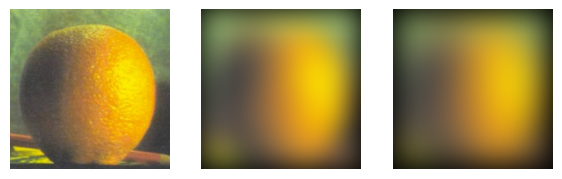
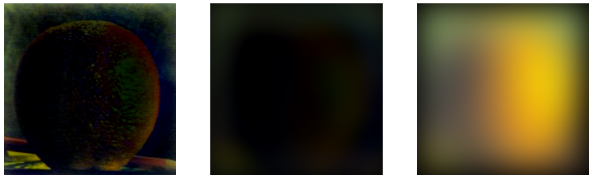

Project 2: Fun with Filters and Frequencies
By: Andi Liu
Most Important Thing:
The most important thing I learned from this project is that images are composed of many frequencies, which our eyes actually process differently to create a complex perception. The other most
important thing I learned from this project is to start my projects earlier.
0. Introduction
For this project, we are using a variety of filtering and frequency techniques to process images for various effects. This includes edge detection,image sharpening, image decomposition, image hybrids, and image blending.
Writing the Code (utilities):
Before starting, I wrote a few utility functions including a function to quickly import an image, a function to quickly display and save an image, and a wrapper function
for the scikit-image library's convolve2D function.
Part 1.1 Finite Difference Operator
We will start with creating a function that applies filters to an image. This will let us quickly obtain gradient magnitude images by applying the difference filters
using this function. We use this function to apply the Dx filter and the Dy filter, which are [-1, 1] and it's transpose, respectively. Below are these filters applied
to the cameraman example image.
The original cameraman image.
Left: cameraman with Dx filter applied, Right: cameraman with Dy filter applied
The pictures imported by scikit input output have four layers, however the cameraman photo we are using in this section is a black and white photo. Since we do not
have to worry about the different color channels for this image, I simply averaged the Red, Green, and Blue Channels to flatten the image into a single-layer 2D matrix.
Now we will get the gradient magnitudes based on the partial derivatives obtained in the previous section. Since partial derivatives constitute a vector, to find the magnitude we can square
both entries (the x partial and the y partial values) and add them, then take the square root. This is a pixel-wise operation. The result of the gradient magnitude is below:
Next we will make our gradient magnitude into a simple edge finder by setting a threshold to filter noise. Below is the image with a threshold of 0.2 applied.
Part 1.2 Derivative of Gaussian Filter
Simply setting a threshold to filter noise isn't very effective, as we can see above there is still a lot of noise. We will smooth out some of this noise by applying a Gaussianfilter to the image before taking the gradients and the gradient magnitude. Here we are using a Gaussian filter of size 13 by 13, with a standard deviation of 3.
We can see that the noise has been entirely removed. All the edges we see in these images correspond to real edges in the image. Additionally, the edges are no longer jagged
like the derivatives without blurring, the edges are all smooth.
We can also combine the gaussian filter and the derivative filters to create derivate of Gaussian filters that we can apply once to the image for the same result. We visualize
the combined filters below.
Left: Derivative of Gaussian x visualized, Right: Derivative of Gaussian y visualized
Below we compare the effects of the combined filter to the effects of applying each filter consecutively.
We can see that the combined filter does give us the same result, although in a lighter shade of gray.
Part 2.1 Image "Sharpening"
Our goal for this part is to create a filter (called the unmask sharp filter) that increases the amount of high frequencies in a given picture. We start by getting a high frequencies
filter by subtracting our gaussian filter from the unit impulse filter. Because convolutions follow the distributive property, this is equivalent to taking the original image and subtracting
the low frequencies. Note: the unit impulse filter I used is the same size as the Gaussian filter, which is 13 by 13.
Writing the Code: Unlike the last section, we are now dealing with color images, so I wrote a new convolve function that convolves a filter with each layer of the color image, stacking them
create the resulting color image.
For the taj image we'll begin with doing this process manually. First we convolve the taj image with a Gaussian filter to blur it, giving us the low frequencies. Then we subtract this
low-frequency version from the original image to get the high frequencies of the image. Finally, we add the original image to some constant (here I used 2.0) times the high frequency image
to get a sharpened image. This process is demonstrated below:
From Left: Original Image, Low Frequency Image, High Frequency Image, Sharpened Image
Below is the results of the sharpening algorithm on the taj example image:
The taj example image with various degrees of sharpening, increasing from top to bottom and left to right.
We will also apply the sharpening algorithm to a few other example images, shown below:
Interestingly, most medium sized images, such as the Mona Lisa image and the flower image above, have pretty good results from a sharpening alpha of 1.0. Larger images such as the badger image
(3rd from the left) need a larger sharpening alpha for good effects (I used an alpha of 2.0), and smaller images such as the wombat image (rightmost image) need a smaller alpha (here I used 0.5).
We will also demonstrate the manual process on the badger image. We again obtain the low frequency image through Gaussian filtering, then the high frequency image by subtracting the low frequencies
from the original, and finally add a constant (I again used 2.0) multiplied by the high frequncies to the original image.
Sharpening Process on the badger image
Below is the badger image with various degrees of sharpening.
Sharpening, Blurring, then Sharpening, an Investigation
We will further investigate the effects of sharpening by blurring a sharpened image, and then resharpening it. We will do this first to the badger image.
From Left: Original Image, Sharpened Image, Blurred Sharpened Image, Sharpened Blurred Sharpened Image
We can see that blurring the sharpened image yielded an image similar to the original, but with slightly more pronounced high frequency features. If we then sharpen the result, we seem to get a
slightly worse version of the first sharpened image. This is most likely because the high frequencies have been filtered out by the blurring, and these frequencies cannot be regained. The badger image is too
large for the Gaussian blur to have much effect, however, so it is hard to discern the differences between one image and another, so we will try this on the much smaller wombat image.
From Left: Original Image, Sharpened Image, Blurred Sharpened Image, Sharpened Blurred Sharpened Image
We can now see that indeed, the sharpened, then blurred, then resharpened image is of lower quality than the original. When we high-pass filter (blur) the sharpened image we lose the high frequencies,
and when we try to resharpen the image it has little effect, because there are no more high frequencies to sharpen.
Part 2.2 Hybrid Images
Our goal in this section is to write code to create hybrid images with different interpretations from different distances. We do this by filtering two images to obtain the high frequencies from one image
and the low frequencies from the other, and superimposing them. For a good hybrid image, there also needs to be a frequency gap (that is, there needs to be no overlap between frequencies of the two pictures).
For the low frequencies of the first image, we simply do a Gaussian blur on the image, with the standard deviation of the Gaussian determining the upper bound of frequencies that we keep. For the high frequecies
of the second image, we also effect a Gaussian blur, but the standard deviation of the Gaussian specifies the lower bound of frequencies to keep. To get the higher frequencies, we simply subtract the blurred image From
the original, leaving us with only the higher frequencies. For alignment of the images we use the alignment functions provided to us. Below are the results on the example image (using sigma = 10 for the low frequencies
and sigma equals 9 for the high frequencies):
Original images
The hybridization of the images has pretty good results, however there is a very large chunk of the image that is a black border, a relic of the alignment process of the images. For better results we can crop
the images after alignment. This also speeds up our hybrid image algorithm a bit. Below are the results of the cropping.
We also notice that the image is a bit dark. This is because it is an average of the low frequencies of one image, and the high frequencies of the other. There is very little illumination left in the high frequencies
because it is primarily the high frequency details. We will solve this problem by simply rebalancing the pixel values to span the full range from 0 to 1.
This rebalancing improves the quality somewhat. Now we will also apply our hybrid image algorithm to a few more sets of images.
Sharkmarine: Example Image 1 and Fourier Transform
Our first example image is of a shark submarine hybrid. We will also demonstrate a frequency analysis to show the effects of hybridization.
The original images, a shark and a submarine

The original images in the frequency domain.
The images after filtering (we see the broad details of the submarine and the intricate details of the shark).
The filtered images in the frequency domain. We can see that each image has had a range of frequencies filtered out.
The sharkmarine hybrid, composed of the filtered images.
The hybrid images in the frequency domain. We can see that it is composed of
the high frequencies of the shark and the low frequencies of the submarine.
It's a Bird Plane! Example Image 2
This image was not very good because the bird and the plane are different shapes, so even though we align their wings there is a large misfit
remaining that makes the image subpar in quality.
Breaking Bad: Example Image 3

Part 2.3 Gaussian and Laplacian Stacks
In this section we implement functions to obtain a Gaussian and Laplacian Stack for an image. The Gaussian stack works by low-pass filtering (Gaussian Blurring) an
image over and over again. The Laplacian stack is derived from the Gaussian stack, by subtracting each image of the Gaussian pyramid from the one before it.
We will see what results when we apply our gaussianStack decomposition to the apple and orange images used in the oraple blend.
Gaussian stack decomposition of the orange image.
Gaussian stack decomposition of the apple image.
Next we will see what we get when we derive the Laplacian stack from Gaussian stack. (Note: the last layer of the Laplacian stack is the last layer of the Gaussian stack.)
Laplacian stack of the orange image.
We can see that the high frequency layer and the medium frequency layers are very dark, because most of the illumination is in the lower frequencies. So, we will rebalance
the pixel brightness of these layers of the pyramid.
After rebalancing, we can see that our stack works quite well, we can see the high, medium, and low frequencies of the orange image.
Now we will do the same for the Laplacian pyramid of the apple image.
Creating the Oraple
We will now use the Laplacian stacks for our apple and orange to create the oraple. First, we will need to create the masks for each layer, which will be used to cut the image
in half. For each layer, the mask will be determined by a Gaussian blending of the clean cut mask. We display the pyramid of masks that we use below:
Gaussian pyramid of the left mask
Gaussian pyramid of the right mask
To create the oraple, we simply apply each layer mask to the corresponding Laplacian layer of the orange and apple. For better results, I skipped the bottom layer of each Gaussian
mask, that is, I did not use the clean-cut mask, and instead opted for using layers 2, 3, and 4 of the mask pyramids. Putting our results together gives us a recreation of Szeliski's
Figure 3.42, shown below:
Recreation of Szeliski Figure 3.42
Part 2.4 Multiresolution Blending
Now that we have the Gaussian and Laplacian stacks necessary for our multiresolution blending, we can go ahead and assemble our oraple using the layers of the stacks we created above.
We display the resulting oraple below:
Our very own oraple
More Multiresolution Blending
Now we will apply our technique to a few more images